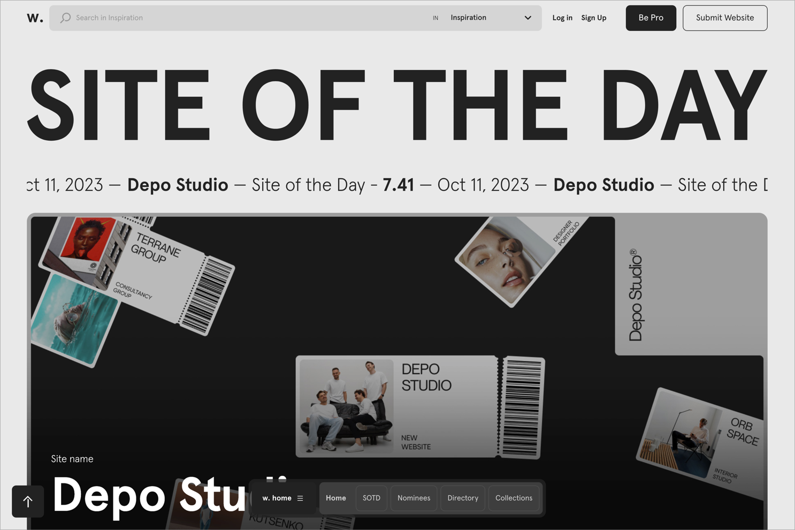
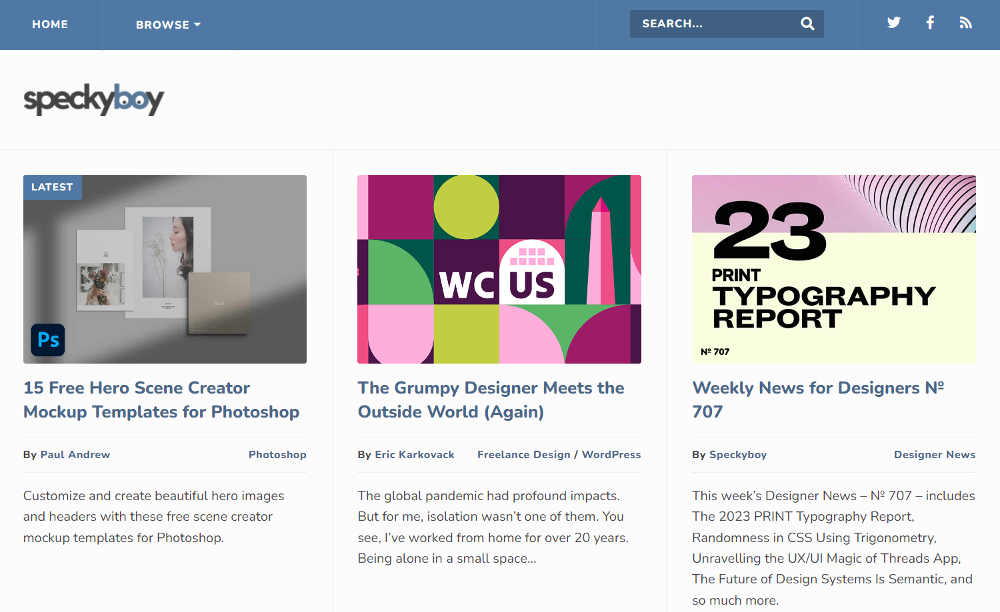
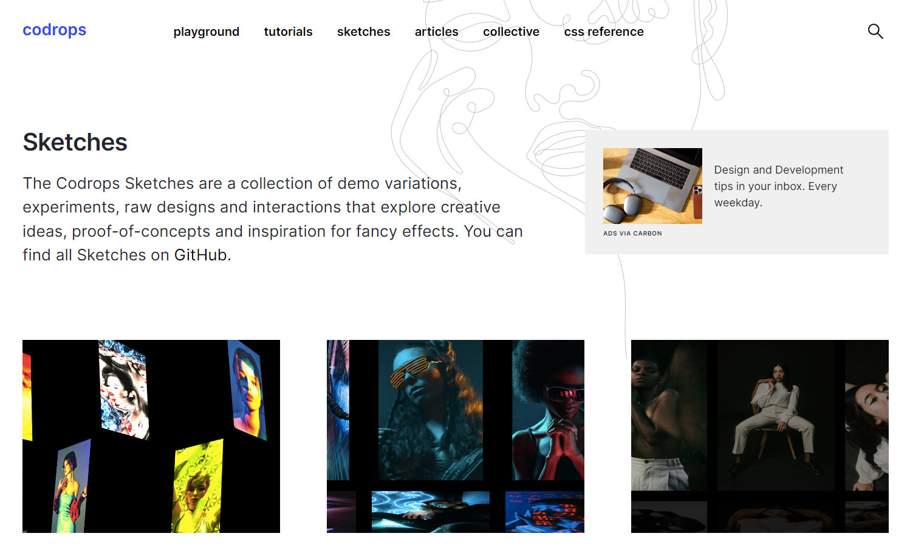
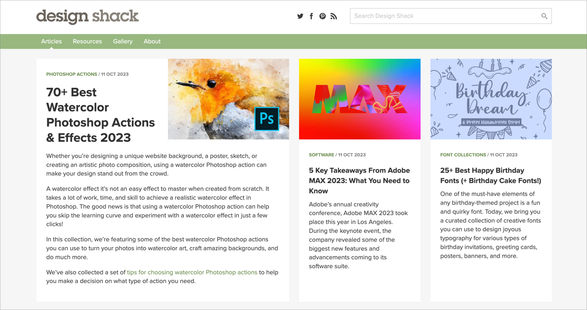
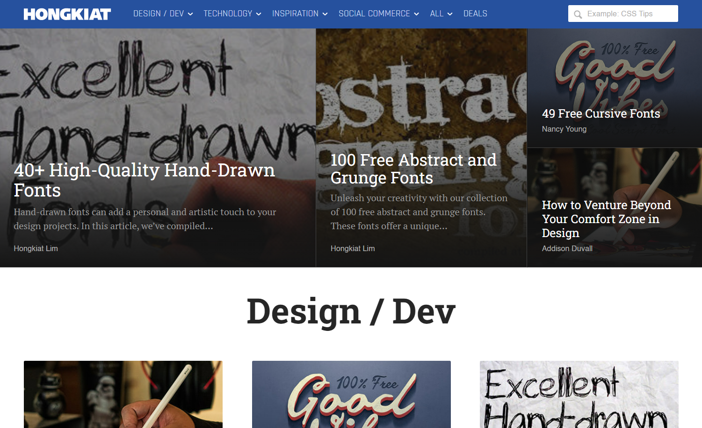
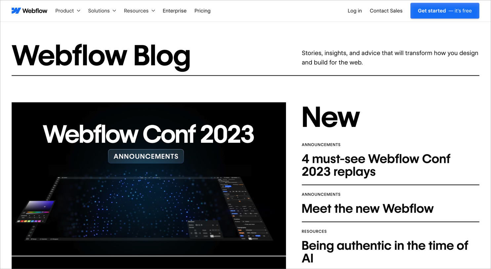

Introduction
Welcome to "The Art of Web Design"! In this guide, we explore the principles, techniques, and resources that contribute to creating visually stunning and user-friendly websites.

Principles of Web Design
Effective web design involves a combination of aesthetics and functionality. Here are some key principles to keep in mind:
- Responsive Design
- Minimalism
- Typography
- Color Theory
- Navigation
Techniques
Mastering various techniques is essential for creating visually appealing websites. Some techniques to consider include:
- Layout Design
- Image Optimization
- CSS Animation
- Interactive Elements
- Accessibility

Resources
Continued learning and staying updated with the latest trends and tools are crucial for web designers. Here are some recommended resources:
- Online Courses
- Books and Ebooks
- Communities and Forums
- Design Tools
- Blogs and Websites
9 web design blogs worth checking out
We’ve picked some of our favorite web design blogs online and broken down what each offers.
1. Webdesigner Depot

Webdesigner Depot is a comprehensive hub for web design articles, news, inspiration, and resources. It excels in UX and UI design, offering dedicated article collections targeting these design specializations. The blog’s Freebies section also provides valuable assets such as downloadable background patterns, icons, mockup tools, and fonts creatives can use in their designs. Additionally, the blog features standout websites each month, offering a detailed breakdown of their design strengths.
2. Awwwards
The Awwwards blog continuously unveils evolving web design trends. This site showcases a new website daily, ensuring it’s always at the cutting edge of design trends and innovations. Each featured website includes an in-depth presentation with page screenshots and color palette analyses, allowing designers to draw inspiration from contemporary styles and comprehend the design choices behind successful websites.
By analyzing how the platform scores submissions on criteria such as search engine optimization (SEO), accessibility, and responsive design, designers can identify best practices, anticipate industry shifts, and refine their work based on established standards.
For specific UX and UI insights, Awwwards offers curated site collections focusing on design elements like menus, transitions, and interactions. If you’d like to engage more, you can nominate your website for the Site of the Day or Site of the Month awards or even apply to become a judge.
3. Speckyboy
Speckyboy offers weekly news posts, templates, code snippets, and website design collections. A standout feature is its focus on the human aspect of web design. It features articles on topics like stepping out of your design comfort zone, being an effective design mentor, and managing demanding clients. This focus helps designers sharpen their technical prowess and build vital interpersonal skills, both crucial to client relations and professional growth.
With Speckyboy’s intuitive categorization, users filter content by specific topics or design tools. This organized approach benefits those seeking targeted insights or guidance on tools like After Effects or Lightroom, streamlining the learning or problem-solving process.
4. Codrops
The Codrops web designing blog is a haven for experimentation in front-end design. It’s packed with fascinating proof-of-concept examples, demos, and animation techniques, with all relevant code published on GitHub. Codrops also offers tutorials and a comprehensive CSS reference resource. While there, you can sign up for their two high-quality publications: a weekly front-end news bulletin and a monthly inspirational websites roundup.
5. Smashing Magazine

Smashing Magazine is a reputable source in the web development community, consistently delivering front-end and UX design ideas, strategies, and techniques. The magazine’s regular digital editions delve deep into design process intricacies, offering practical insights into responsive layouts, CSS animations, and JavaScript frameworks. They also tackle overarching design principles, such as accessibility and sustainable design, ensuring designers marry aesthetics with functionality and ethics.
Additionally, they present a superb selection of free resources, including front-end starter kits and boilerplates, CSS generators, and accessible front-end components. Beyond articles and resources, Smashing Magazine demonstrates a commitment to the design community — they host interactive online workshops and release regular interview podcasts, fostering continuous growth and collaboration among web professionals.
6. Design Shack
Design Shack is a valuable resource for broad design information, offering a gallery with unique samples categorized by type and color. Covering graphics, presentations, and video, its article collections provide detailed walkthroughs of various tools and extensive listicles — some boasting over 60 items — curating top-tier templates, typography examples, and essential creative tools.
7. Envato Tuts+

Envato Tuts+ is famous for its signature free tutorials and design video courses that teach essential creative skills. With over 15,000 guides tailored to cater to all proficiency levels, users can dive deep into subjects ranging from JavaScript and logo design to Photoshop and other Adobe Creative Cloud apps. Beyond video tutorials, the platform also offers extensive written guides on wireframing, PowerPoint presentations, font trends, and other design topics.
8. Hongkiat
Hongkiat’s dedicated team finds and shares the latest, most impactful design tools. They review apps that boost productivity and streamline workflow and share data visualization tool roundups and carefully selected font lists, providing designers with cutting-edge resources to help them stay ahead of design trends. Hongkiat’s rich article compilation also supports freelancers, offering guidance on mastering personal branding and maintaining motivation during tough times.
9. Webflow
Our own Webflow blog is an exceptional source of web design information and inspiration, filled with in-depth articles tailored to support, inform, and inspire freelance and in-house web designers. The blog offers diverse content, ranging from intricate design techniques to industry-focused lists showcasing standout website examples. We also share enlightening interviews with prominent designers and design teams, giving readers a unique perspective on the creative processes and experiences that shape the industry. To stay updated with the latest insights, subscribe to the Inspo mailing list and receive weekly news and articles directly in your inbox.
Transform your new design ideas into a beautiful website with Webflow
For more web design inspiration, drop by Made in Webflow and view the sites our talented designers created using our visual web design platform. If you’re looking for examples of innovative layout, typography, and color that bridge both web design and graphic design, explore our list of 7 inspirational graphic design blogs.
Finally, head over to Webflow University for video tutorials and how-tos to learn or brush up on any design skills.